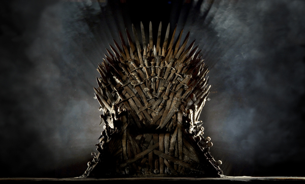

Game of Thrones (GOT; llamada Juego de tronos en España) es una serie de televisión de drama y fantasía medieval desarrollada por David Benioff y D. B. Weiss y producida por la cadena HBO. Su argumento está inspirado en la serie de novelas Canción de hielo y fuego, escrita por el estadounidense George R. R. Martin, y relata las vivencias de un grupo de personajes de distintas casas nobiliarias en el continente ficticio de Poniente para tener el control del Trono de Hierro y gobernar los siete reinos que conforman el territorio
El primer episodio se estrenó en abril de 2011 en Estados Unidos y Canadá12 y desde 2015 la transmisión de sus episodios se llevó a cabo de forma simultánea en más de un centenar de países.13 La serie posee elevados niveles de audiencia y es uno de los programas de televisión bajo demanda más populares de HBO,14 así como uno de los «mayores dramas» y el «programa más comentado» de la televisión en 2014.15 Ciertos medios, como The Washington Post, Time, The Hollywood Reporter y Rolling Stone la catalogaron como una de las mejores series de televisión1617 y la crítica ha elogiado aspectos como sus actuaciones, los guiones, los efectos especiales, las secuencias de batallas y la música,181920 esta última a cargo del compositor Ramin Djawadi.21 No obstante, también ha recibido comentarios desfavorables por sus escenas de violencia, sexo y desnudez.222324 Entre sus numerosos premios y reconocimientos sobresale la mayor cantidad de galardones Emmy obtenidos en toda la historia de la ceremonia.25 Su éxito ha dado lugar a la producción de una amplia variedad de productos entre los cuales se incluyen juguetes, videojuegos, libros y réplicas de armas y armaduras, lo cual la convierte en una de las marcas más populares del sector televisivo.262728 A mediados de 2017 HBO anunció su interés en producir nuevas series inspiradas en Canción de hielo y fuego, cuya trama habría de servir de precuela a los acontecimientos de Game of Thrones.2930 En agosto de 2022 se estrenó House of the Dragon en HBO Max.
En 1991 el escritor estadounidense George R. R. Martin comenzó a desarrollar las bases y elementos de lo que habría de convertirse en la serie de novelas de fantasía Canción de hielo y fuego, cuyo primer libro titulado Juego de tronos salió a la venta en 1996.5556 Desde entonces y hasta 2007 se publicaron otros tres libros más: Choque de reyes (1998), Tormenta de espadas (2000) y Festín de cuervos (2005). En conjunto, cada uno de las entregas se hizo acreedora a críticas mayormente favorables57585960 y múltiples galardones y reconocimientos, que incluyen premios Hugo, mundiales de fantasía y Locus. Además, Festín de cuervos fue el primer libro de Canción de hielo y fuego en debutar como el libro más vendido de la lista The New York Times Best Seller list.61
En 2001 Martin comenzó a recibir propuestas de productores y guionistas de cine y televisión para realizar una adaptación de Canción de hielo y fuego.2 El autor, no obstante, rechazó las propuestas cinematográficas al considerar que sus novelas no eran aptas para «ser filmadas» como una sola película, dado que en su opinión la extensión de cada una habría requerido de su propio filme, como ocurriera con El Señor de los Anillos y su correspondiente trilogía de largometrajes.62 En cuanto al sector televisivo, las escenas de sexo y violencia representaban en muchos casos una problemática para los productores, y para el propio autor que desestimó la posibilidad de ver censurado su material.
Benioff y Weiss redactaron un par de guiones preliminares para el episodio piloto en agosto de 2007 y junio de 2008, respectivamente.45 Aunque HBO se mostró satisfecho con ambos documentos,568 aplazó la aprobación del rodaje del episodio, titulado «Winter Is Coming», hasta noviembre de 200869 debido en parte a la huelga de guionistas en Hollywood y a la dimisión de Strauss como presidenta del canal.68 El libreto del episodio incluyó modificaciones con respecto al material literario; por ejemplo, en Juego de tronos se especifica que Ned Stark decapita a Gared, sin embargo en el episodio se revela que el decapitado es Will.
También se cambió la secuencia de relaciones sexuales entre Drogo y Daenerys: en los libros, ella accede a la petición de su esposo, pero en la serie esto se muestra como una violación.
Las grabaciones se llevaron a cabo entre octubre y noviembre de 2009 en Irlanda del Norte, Escocia y Marruecos, bajo la dirección de Tom McCarthy.71 Tras difundirse el capítulo a algunos amigos de Benioff y Weiss para conocer su opinión, el resultado fue mayormente desfavorable y motivó a que HBO rechazara esta versión y solicitara nuevamente la grabación del episodio con otro director y ciertos cambios en el reparto original como Tamzin Merchant y Jennifer Ehle en los roles de Daenerys y Catelyn Stark.67273 Tim Van Patten se hizo cargo de la dirección de la nueva versión del episodio piloto, que se filmó en 2010
Game of Thrones es una de las series más costosas de todos los tiempos.9 La producción del episodio piloto requirió entre cinco a diez millones USD,84 y el importe de la primera temporada completa osciló en un rango de 50 y 60 millones USD.85 Para la secuencia de la batalla del capítulo «Blackwater», de la segunda temporada, se destinaron ocho millones USD,8687 costo que se mantuvo para los capítulos producidos entre 2012 y 2015.8889 Para la sexta temporada el monto se incrementó a más de diez millones por episodio, lo cual significó para HBO una inversión de 100 millones USD ese año y un hito en la industria televisiva.90 Cada uno de los capítulos de la temporada final de la serie, producidos en 2018, tuvieron un presupuesto de al menos 15 millones USD.91 La organización gubernamental británica Northern Ireland Screen Agency financió parte de la serie92 debido a los beneficios económicos derivados de la actividad turística en Irlanda del Norte —en sus ocho años de producción, aportó 15.95 millones GBP, de acuerdo con registros de la propia organización
Con la sexta temporada quedaron cubiertos los primeros cinco libros de Canción de hielo y fuego. Debido a que las últimos dos novelas todavía no eran publicadas hasta entonces, el resto de episodios estuvo basado en material inédito de los guionistas, mayormente trazado a partir de una descripción general de Martin sobre los eventos futuros del material literario.8 A continuación se incluye información sobre la producción de cada temporada de la serie.
Los diseños de Michele Clapton y April Ferry, responsables de vestuario de Game of Thrones,122123 provinieron de varias fuentes y ocasionalmente se apartaron de las descripciones de los libros ya que «a veces [esos vestuarios] no pueden trasladarse adecuadamente a la pantalla».124 Por ejemplo, las armaduras japonesa y persa, el vestuario beduino y pieles de animales a semejanza de los inuit influyeron en la indumentaria de los Dothraki y los salvajes,124 mientras que los vestidos con escote diseñados por Alexander McQueen inspiraron el vestuario de Margaery Tyrell.124
Una práctica habitual consistía en que la indumentaria debía ser usada un par de semanas antes del rodaje, con tal de que luciera con arrugas y ofreciera un mayor realismo al espectador.125 El diseñador Kevin Alexander se basó en artistas prerrafaelistas y obras de pintores como John William Waterhouse y Dante Gabriel Rossetti para fabricar las pelucas.124 En total se produjeron alrededor de un par de docenas de pelucas con cabello importado de India, Europa y Rusia. En el caso de Clark —intérprete de Daenerys—, se requerían hasta dos horas por sesión para la colocación y arreglos de su peluca rubia con trenzas. En otros casos, se procedió al teñido del cabello de actores como Gleeson y Turner —Joffrey y Sansa— a manera de reemplazo del peróxido.
En el rodaje de Game of Thrones se llegaron a usar hasta cuatro unidades de filmación en paralelo, seis equipos de dirección con su respectivo director y más de un millar de especialistas técnicos.10 Con siete episodios en su haber, Alan Taylor dirigió la mayor cantidad en la historia de la serie, seguido de Alex Graves, David Nutter, Mark Mylod y Jeremy Podeswa, cada uno responsable de seis episodios diferentes. Otros directores habituales fueron Daniel Minahan, Michelle MacLaren, Alik Sakharov, Miguel Sapochnik y Brian Kirk.135
A su vez, Benioff y Weiss dirigieron un par de episodios.72136 Entre los directores de fotografía y editores que más participaron en la serie figuran Jonathan Freeman y Robert McLachlan, y Tim Porter, Katie Weiland y Mark Mylod.137 En cuanto a las características técnicas del rodaje, el formato cinematográfico utilizado en la serie es 1.78:1 con lentes Angenieux Optimo y Cooke S4 instalados en cámaras ALEXA Mini, de la compañía Arri.138 El formato del negativo es digital, el de audio es Dolby Digital, y el de vídeo es HDCAM SR, HDR 10, ProRes y Redcode RAW.139 El formato de resolución es en alta definición de 1080p. En promedio la duración de cada capítulo es de 57 minutos,140 excepto los episodios de la última temporada, cuya extensión es mayor.141 El episodio «The Long Night» es el más extenso de la serie, con una duración de 82 minutos.
Uno de los principales rasgos de la música de Game of Thrones es que cada pista sirve para expresar el tono y la emoción de cada escena,159 y se le dio especial énfasis al uso del violonchelo —especialmente en la secuencia de apertura— en vez del recurrente sonido de flautas y solos característicos de otras producciones que abordan temáticas fantásticas, en opinión de Benioff y Weiss.160 Para la secuencia de apertura, además del violonchelo, se incorporaron sonidos provenientes de un dulcémele y un kantele para ofrecer un «sentido de misterio y anticipación por el episodio».161 Otros instrumentos usados por Djawadi en la banda sonora incluyen el didyeridú asociado con los salvajes y la flauta duduk para los Dothraki.162 A diferencia de los temas que acompañan al resto del reparto, el caso de los caminantes blancos y el Rey de la Noche es distinto ya que a lo largo de la serie se diseñaron y emplearon distintos sonidos. Por ejemplo, al principio estaban vinculados con el ruido de una armónica de cristal.163
Cabe señalar que el desarrollo de los personajes también influyó en la evolución de ciertos temas, como es el caso de los ya mencionados caminantes blancos que a partir de la aparición de su ejército están asociados con sonidos orquestales; y el de Daenerys, que al comienzo es breve y solo está conformado del sonido de un violonchelo, pero conforme va adquiriendo más poder su tema se vuelve más extenso y complejo, con combinaciones de sonidos de tambores similares al taiko japonés y al bedug tailandés.163 Además de la secuencia de apertura y las melodías asociadas con cada protagonista, otros temas notables son la canción «The Rains of Castamere» que suele estar asociada con los Lannister y que aparece de forma más prominente en el capítulo del mismo nombre; y «Light of the Seven», una composición mayormente de piano que aparece en una de las escenas del último capítulo de la sexta temporada.
Joe Bauer y Steve Kullback supervisaron la producción simultánea de efectos visuales de catorce estudios ubicados en distintos países.11 Para la primera temporada, los estudios BlueBolt y Screen Scene —de Inglaterra e Irlanda— se hicieron cargo de los efectos visuales. La representación de la mayoría de las edificaciones más notables de Poniente se llevó a cabo mediante proyecciones de modelos digitales en 2.5D, que le permitió al equipo de producción ajustar el ángulo de visión de cada estructura así como la orientación de la panorámica178 con ayuda de efectos de iluminación. Posteriormente se agregaba una capa de pintura con aspecto mate, que volvía a proyectarse sobre el modelo para añadir un mayor realismo a la imagen final. De esta forma se produjeron el castillo de Invernalia y la Fortaleza Roja, por ejemplo.
El diseño de los dragones pasó por varias modificaciones, algunas de las cuales se realizaron momentos previos a la grabación de sus primeras escenas en la serie. Entre estas se incluyen la reducción del tamaño de las puntas en la parte trasera de su cuello y el cambio de la apariencia de las alas y patas. En ambos casos, las modificaciones obedecieron a discusiones del equipo sobre los movimientos que habrían de tener las criaturas si existieran.181 Una vez definido el diseño, se escaneó y construyó el modelo digital para cada uno de los dragones, que diferían entre sí solamente por su color y movimientos.179 Para la escena en la que uno de los dragones se posiciona en el hombro de Daenerys, se colocaron marcadores de seguimiento en el cuerpo de Clarke para facilitar la edición posterior. De manera simultánea, para que la actriz tuviera una mejor noción de las dimensiones y posición de la criatura al momento de grabar la escena, se colocó en su hombro un objeto que tenía la apariencia del dragón.179 En la segunda temporada, el estudio alemán Pixomondo asumió la responsabilidad del diseño y efectos visuales de los dragones y para producir su aleteo se inspiraron en la anatomía y los movimientos de una gallina.182 Para producir las secuencias en las que los dragones escupen fuego, en las primeras temporadas se utilizó un brazo hidráulico de tipo technocrane con un lanzallamas y una cámara colocados en uno de sus extremos. A partir de la séptima temporada, se incorporó un sistema de spidercam. Otro cambio similar se presentó con relación a la interacción de Clarke con dichas criaturas durante la filmación: inicialmente se usaron modelos de tamaño real de los dragones pero, una vez adultos, el equipo de producción recurrió al uso de utilería —por ejemplo, una pelota de tenis o un objeto acolchado sujeto a una barra—. A partir de la quinta temporada, el estudio estadounidense Rhythm & Hues se sumó a las labores de diseño y animación de los dragones.181 Para entonces, hasta treinta empleados estaban involucrados simultáneamente en esta labor.
Para su distribución en España, el doblaje de la serie contó con la dirección de Antonio Villar y se realizó en el estudio Soundub —durante las primeras tres temporadas— y en SDI Media —a partir de la cuarta—, ambos en Madrid. Algunos actores que participaron en esta versión son Pablo Adán (Ned Stark), Fernando Hernández (Robert Baratheon), Miguel Ángel Montero (Jaime), Amparo Valencia (Catelyn), Pepa Castro (Cersei), María Blanco (Daenerys), Eduardo Bosh (Jon Snow) y Carlos del Pino (Tyrion).192193194195196197198 A diferencia del doblaje realizado en otras series televisivas, este debió ser supervisado antes de su distribución para garantizar el uso adecuado de la terminología de Canción de hielo y fuego. El proceso de producción del doblaje para cada temporada normalmente se extendía hasta tres semanas.
Roberto Molina y Miguel Ángel Flores dirigieron el doblaje para su distribución en Hispanoamérica entre las temporadas 1 y 2, y 3 a 8, respectivamente. Su producción se llevó a cabo en los estudios DAT Doblaje Audio Traducción y LAS Dubbing, radicados en Ciudad de México. Algunos actores que participaron en esta versión son Humberto Vélez (Ned Stark),200 Guillermo Coria (Robert Baratheon),201 Ricardo Méndez (Jaime),202 Xóchitl Ugarte (Daenerys),203 Gerardo García (Jon Snow)204 y Dafnis Fernández (Tyrion).
HBO estrenó «Winter is Coming» —el primer episodio de Game of Thrones— el 17 de abril de 2011 en Estados Unidos y Canadá —aunque dos semanas antes el canal había subido a su sitio web los primeros quince minutos del episodio—,12206207 y al día siguiente el canal Sky Atlantic se encargó de su transmisión en Reino Unido e Irlanda —donde atrajo a 750 000 espectadores, un récord de audiencia para el canal—,208209 además de estar disponible en HBO Central Europe.210 En Hispanoamérica y España su estreno ocurrió el 8 y 9 de mayo por HBO y Canal +, respectivamente.211212213 En Australia el episodio se transmitió el mismo día del lanzamiento de Danza de dragones, quinto libro de Canción de hielo y fuego.
Entre el 30 de enero y el 5 de febrero de 2015 se estrenaron los últimos dos capítulos de la cuarta temporada en 205 salas de cine de algunas ciudades estadounidenses, y en formato IMAX para lo cual se remasterizó el contenido audiovisual original con tecnología IMAX DMR. Se trató de la primera producción de HBO en estrenarse en este formato.215 Su recaudación total ascendió a 1.8 millones USD.